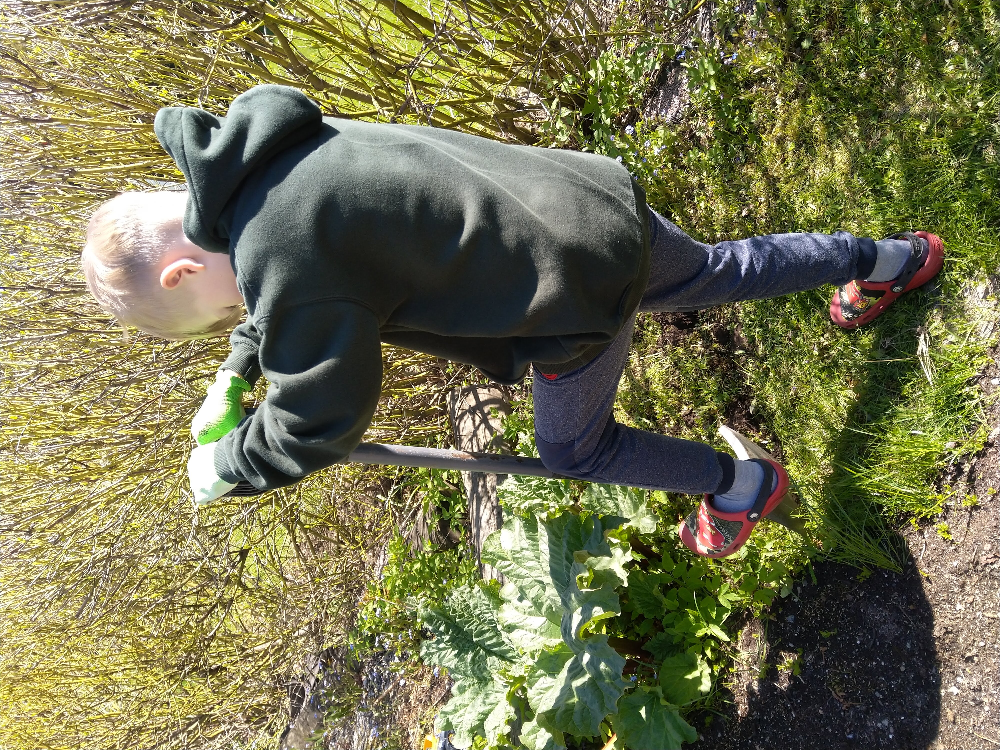

Paras paikka kasvimaalle on lämmin aurinkoinen tai puolivarjoisa paikka. Lämpö ja riittävä valo varmistaa, että sato ehtii kypsyä kasvukauden loppuun mennessä. Myös varjoisammalle paikalle voi perustaa kasvimaan, mutta silloin ei kannata viljellä kovin pitkää kypsymistä vaativia lajikkeita. Helpointa on perustaa kasvimaa tasaiselle paikalle. Mittaa vilejelykehikon kokoinen alue. Kaiva lapiolla hieman pinta maata pois, varsinkin jos alla on uuta kasvillisuutta esim. nurmikkoa. Kaiva hieman laajemmalta alueelta kuin mitä viljelykehikon reunus on.
Kun pohja on valmis, aseta viljelykehikko paikoilleen. Kehikoita voi pinota myös useamman päällekkäin, jolloin saat kasvimaahan syvyyttä eikä sinun tarvitse kyykkiä niin alhaalla sitä hoitaessasi. Suositus on asettaa pohjalle suodatinkangas. Suodatinkangas estää muiden kasvien juurien pääsyn viljelykehikolle eli ehkäisee rikkaruohoja kasvimaalla. Viljelukehikoille löytyy valmiiksi sen muotoon ja kokoon sopivia suodatinkankaita, jotka nousevat osoittain reunaa pitkin ylös, jolloin se suojaa myös viljelykehikkoa ja pidentää sen käyttöikää. Voit yhtälailla ostaa myös metritavaraa ja leikata itse sopivan kokoisen palan ja asetella sen kehikon pohjalle. Voit niitata tai naulata reunat kiinni kehikkoon muutamasta kohtaa, jolloin kangas pysyy paremmin paikoillaan kun sitä aletaan täyttämään.
Seuraavaksi viljelykehikko täytetään mullalla. Peruspuutarhamulta käy kasvimaalle. Halutessasi voit hankkia rakeista puutarhalannoitetta ja sekoittaa pakkauksen ohjeen mukaan mullan sekaan täyttämisen yhteydessä Tuoreessa mullassa on itsessään myös vielä paljon ravinteita, joten tässä kohtaa lisäravinteen sekoittaminen multaan ei ole välttämätöntä. Kasvimaata lannoitetaan myös säännöllisesti kasvukauden aikana. Täytä kehikko lähes yläreunaan asti. Multa tiivistyy ja painuu kasaan sateiden ja istustuten myötä.